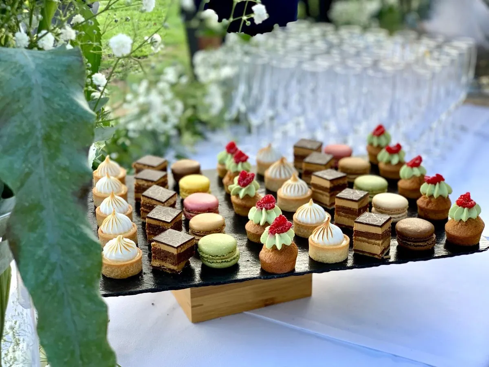

Le gâteau entre en scène…
Pâtisserie · Cake design · Aurillac
Un gâteau à votre image.
Dès 15 personnesAurillac & alentours
Choisir mes saveursLE PRÉSENTOIR
PAS DEUX
PAREILS.
Une forme, une couleur, une envie.
C’est souvent comme ça que tout commence.
Quelques fêtes passées par l’atelier.

Dans l’atelier, à Aurillac.
UNE PÂTISSIÈRE, UN UNIVERS
ET DERRIÈRE,
IL Y A EMMA.
Je dessine des gâteaux, mais d’abord, je vous écoute.
Votre fête, vos goûts, cette photo que vous avez gardée de côté. C’est notre point de départ. Ensuite, je travaille les formes, les saveurs et chaque détail, à la main, dans mon atelier.
Racontez-moi votre idée sur InstagramDE L’IDÉE À LA FÊTE
QUATRE ÉTAPES.
- 01
L’idée
Une date, un nombre d’invités, une photo gardée de côté. Vous m’écrivez.
- 02
Le dessin
On choisit ensemble formes, couleurs et saveurs. Je vous envoie un devis.
- 03
L’atelier
Tout est fait à la main, couche par couche, les jours qui précèdent la fête.
- 04
La fête
Je livre et j’installe, jusqu’à 120 km pour un mariage. À vous de souffler.
L’ATELIER DES SAVEURS
TROUVEZ VOTRE ACCORD.
Touchez le biscuit, le cœur ou la crème.
Choisissez un parfum, le gâteau se transforme.
Aperçu à confirmer avec Emma.
On dresse votre gâteau…
L’aperçu 3D n’est pas disponible dans ce navigateur. Vos choix restent disponibles.
LE BISCUIT

LE LENDEMAIN,
ON BRUNCHE.
Un moment gourmand pour prolonger la magie : après un mariage ou pour un événement privé, je prépare le buffet du lendemain.
- Viennoiseries et brioches
- Chouquettes
- Cookies et brownies
- Mini cakes
- Pain, confitures et pâtes à tartiner
- Salade de fruits frais
- Fromage blanc et granola
- Mini quiches et cakes salés
- Mini sandwichs et wraps
- Avocado toast
- Œufs brouillés
- Plateau de fromages
- Plateau de charcuterie
Pour accompagner : jus de fruits, café, thé, chocolat chaud. À récupérer, livré, ou installé sur place.
VOTRE GÂTEAU COMMENCE ICI
PARLONS DE
VOTRE GÂTEAU.
Votre date, vos envies, les saveurs qui vous font craquer. Racontez-moi ce que vous avez en tête : on dessine la suite ensemble.
Gâteaux livrés à Aurillac et dans un rayon de 20 km,
jusqu’à 120 km pour un mariage ou un grand événement.
Livraison et installation à convenir ensemble.
01À partir de combien de personnes ?
À partir de 15 personnes. Le gâteau passe à 2 étages dès 25 personnes, et à 3 étages dès 60.
02Quel budget prévoir ?
Comptez 7 à 8 € la part, selon les saveurs et le décor : tout est fait sur mesure. Pour un mariage ou une pièce montée, un acompte de 30 % à la validation du devis réserve votre date, le solde se règle à la livraison.
03Combien de temps à l’avance ?
Au moins 15 jours pour un gâteau, et un mois et demi pour un mariage ou une pièce montée. Je prends peu de commandes par week-end : réservez tôt. Une dégustation (payante) est possible avant un mariage.
04Et pour la livraison ?
Je livre à Aurillac et jusqu’à 20 km pour les gâteaux, et jusqu’à 120 km pour les mariages et grands événements.
05Une allergie, un régime particulier ?
Je ne propose pas de recettes adaptées (sans gluten, sans lactose, végétalien…) et je ne peux pas garantir l’absence d’allergènes. Tout est sans porc et sans alcool.